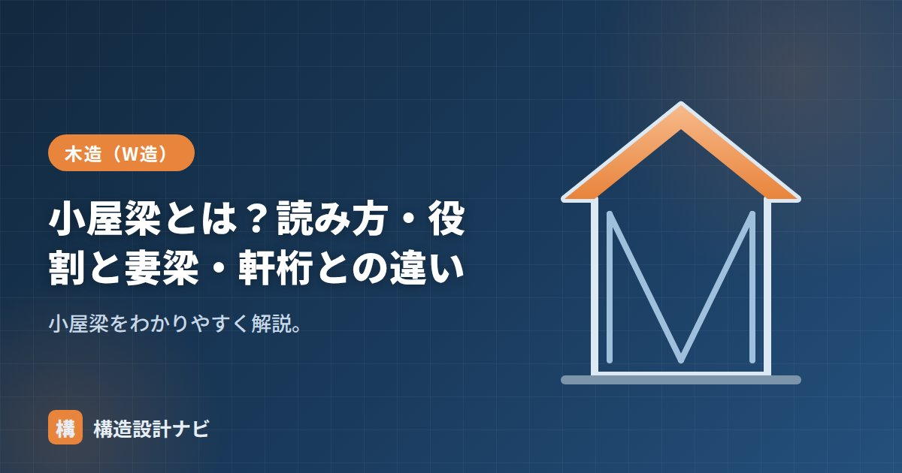

小屋梁とは？読み方・役割と妻梁・軒桁との違い

小屋梁（こやばり）は、和小屋の最下部で小屋束を受け、屋根の荷重を柱・桁へ伝える横架材です。木造の屋根を支える骨組み（小屋組）の中で最も太く重要な部材で、屋根の重さだけでなく、上に載る積雪荷重や、地震・風による水平力の一部も負担します。
- 小屋梁は小屋組の最下部で小屋束を受け、屋根荷重を柱・桁へ伝える横架材。
- 断面はスパン（梁間の距離）と負担する荷重の大きさから決める。
- 軒桁は外周で受ける桁、妻梁は妻側の梁で、位置と役割が異なる。
読み方と役割
読み方は「こやばり」。小屋組の一番下に架かり、その上に立つ小屋束を受けて、屋根全体の荷重を集めます。集めた荷重を、外周の軒桁や柱へ伝えます。丸太のまま使う「丸太梁」もあります。梁の中央付近は曲げモーメントが最も大きくなるため、丸太梁は根元の太い方を中央側に、末口の細い方を軒側に向けて架けるなど、材の性質を活かした架け方が伝統的に行われてきました。
断面の決め方
小屋梁の断面（せい・幅）は、主にスパン（梁間方向の距離）と、その梁が負担する屋根荷重の範囲（負担幅）から決まります。スパンが長くなるほど、あるいは負担する屋根面積が広くなるほど、梁にかかる曲げモーメントとたわみが大きくなるため、断面を大きくするか、間に小屋束や小屋束を増やして負担を分散させる必要があります。実務では許容応力度計算やたわみの検討で断面を確認し、代表的な寸法として105mm×240mm〜120mm×300mm程度が使われることが多いですが、規模や荷重条件によって異なります。
妻梁・軒桁との違い
| 部材 | 位置・役割 |
|---|---|
| 小屋梁 | 梁間方向に架かり、小屋束を受けて屋根荷重を支える |
| 軒桁（のきげた） | 外周（桁行方向）で垂木や小屋梁を受ける。柱頭をつなぐ |
| 妻梁（つまばり） | 建物の妻側（端部）に架かる梁 |
小屋梁は屋根荷重を支える主役の梁、軒桁は外周で受ける桁、という役割の違いがあります。小屋梁は柱の直上または柱間に架け渡され、その両端は軒桁や胴差に載せて仕口（渡りあごや大入れ蟻掛けなど）で接合するのが一般的です。妻梁は建物の妻側（棟と直交する短辺側）に架かる梁で、小屋梁と同様に小屋束を受けることもありますが、位置づけとしては小屋梁の一種として扱われることが多い部材です。
改修工事の現地調査では、小屋梁の中央部にたわみや割れがないかをまず確認します。丸太梁は末口側で断面が細くなるため、増し床や設備の吊り荷重を追加する際に、根元側と末口側で耐力の余裕がまったく違う点を見落とさないよう注意しています。
小屋組の構成と荷重の流れ（図解）
小屋梁がどこに位置し、どんな力を受けるのかを、小屋組全体の中で確認しましょう。
和小屋と洋小屋の違い
小屋梁が使われるのは主に「和小屋」です。もう一つの形式である「洋小屋」とは、力の受け方がまったく異なります。
| 和小屋 | 洋小屋（トラス） | |
|---|---|---|
| 構成 | 小屋梁の上に小屋束を立て、母屋を受ける | 部材を三角形に組んだトラス構造 |
| 力の伝わり方 | 小屋梁の曲げで支える | 各部材の軸力（引張・圧縮）で支える |
| 飛ばせるスパン | おおむね5〜6m程度まで | 10m以上も可能 |
| 小屋裏の使い方 | 束が立つが比較的自由に使える | 斜材が入るため使いにくい |
| 主な用途 | 一般的な木造住宅 | 体育館・工場・大スパンの建物 |
和小屋は、小屋梁という1本の部材が曲げで屋根荷重を支える形式です。そのためスパンが長くなると梁のせいを大きくする必要があり、材の入手やコストの面で限界があります。一方の洋小屋は、部材を三角形に組んで曲げではなく軸力で力を伝えるため、細い部材で長いスパンを飛ばせます。住宅では小屋裏の使い勝手と施工の簡便さから、和小屋が広く使われています。
よくある質問
Q1. 小屋梁のスパンはどこまで飛ばせますか？
和小屋の小屋梁は、一般的な断面（105〜120mm幅、せい240〜300mm程度）でおおむね4〜5m程度が実用的な範囲です。それ以上になると必要なせいが大きくなりすぎ、材の入手やコスト、小屋裏の高さの制約が問題になります。長いスパンが必要な場合は、集成材を使う、中間に柱を立てる、あるいは洋小屋（トラス）形式に変更する、といった対応をとります。
Q2. 小屋梁に丸太を使うのはなぜですか？
伝統的には、製材せずそのまま使える丸太が経済的で、かつ断面性能を無駄なく使えたためです。丸太は自然の曲がり（背）を上に向けて架けることで、荷重によるたわみを相殺する効果も期待できます。ただし断面が均一でないため設計での評価が難しく、現在の新築ではプレカットされた製材や集成材が主流です。古い民家の改修では丸太梁の扱いが課題になることがあります。
Q3. 小屋梁と胴差はどちらが太いですか？
一概には言えませんが、負担する荷重と支持スパンで決まります。小屋梁は屋根荷重（積雪を含む）を集めますが、胴差は2階の床荷重と2階の壁・柱からの荷重を受けるため、一般的な住宅では胴差のほうが大きな断面になることが多いです。ただし積雪の多い地域では、屋根荷重が大きくなるため小屋梁の断面も相応に大きくなります。
まとめ
- 小屋梁（こやばり）は小屋束を受けて屋根荷重を支える横架材。
- 「母屋→小屋束→小屋梁→軒桁・柱」で荷重を伝える。
- 断面はスパンと負担荷重から決め、必要に応じて小屋束で負担を分散させる。
- 軒桁は外周で受ける桁、妻梁は妻側の梁で、役割が異なる。